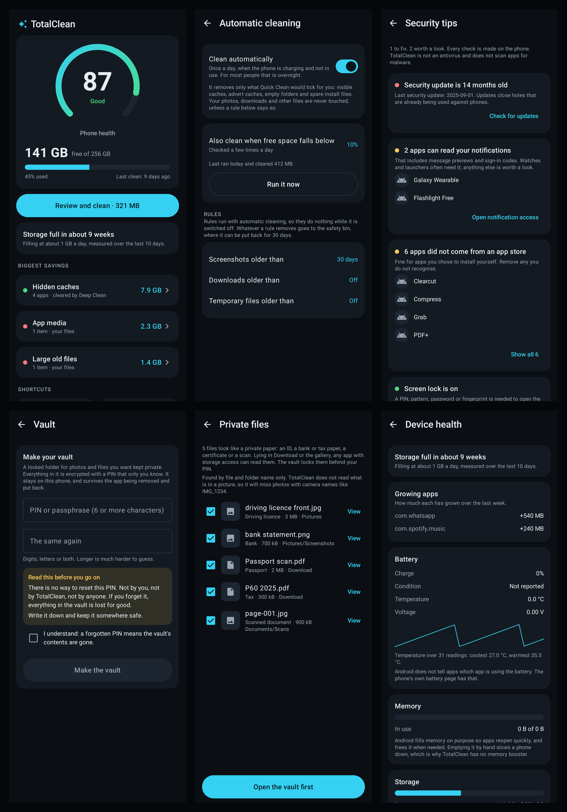

Free up your phone. See exactly what went, and take it back if you want.
TotalClean is a phone cleaner for Android that tells the truth about space. Every figure is measured after the clean, your own files go to a 30-day safety bin, and nothing about you or your phone is collected.
Download TotalClean Android 11 or newer · about 23 MB · what is new

What it does
Quick Clean
Finds caches, advert caches, empty folders, spare install files, leftovers from removed apps and more. Junk is ticked for you; your own files never are.
Deep Clean
Clears every app's hidden cache in one go, then measures how much really went.
Safety bin
Anything of yours that is removed waits 30 days in the bin and goes back with one tap.
Photos and media
Similar shots with the sharpest picked out, blurred and dark photos, exact duplicates, a swipe review and a Photo Optimiser.
Google Drive
Move files to a tidy TotalClean folder in your own Drive. Each one is checked against its Drive copy before it is offered for removal.
Sleep Mode
Stops the apps you choose. Messaging, alarm, banking, health and security apps start off protected.
Automatic cleaning and rules
Off until you switch it on. Junk only, overnight, plus rules such as screenshots older than 30 days.
Vault and private files
Finds photos of passports, bank cards and other papers and locks them in an encrypted vault behind a PIN only you know.
Security tips
Checks of the phone's own settings and apps, each with a button that takes you to the fix.
Storage forecast
How fast storage is filling, when it will be full, and which apps are growing.
Storage map and chat media
Walk through storage folder by folder, or clear chat pictures, videos and voice notes by type.
Widget and quick tile
Free space on the home screen and a one-tap clean in the notification shade.
What it will not do
- No memory booster. Emptying memory by hand slows a modern phone down.
- No invented numbers. If Android will not let an app reach something, TotalClean says so.
- No adverts, upsells or reminders to open the app. It sends a weekly report and a low-space warning, and both can be switched off.
- No antivirus claims. Security tips check settings. They do not scan apps for malware.
Installing
- Tap Download and open the file. Android will ask you to allow installs from your browser or file app.
- Play Protect may ask about an app it has not seen. TotalClean asks for wide access to storage because that is what a cleaner needs.
- For Deep Clean, Sleep Mode and Browser Cleaner the app asks you to switch on its helper in Accessibility settings, and shows you how. On Android 17 the helper cannot run while Advanced Protection is on.
The app checks this site's releases for a newer version and tells you when there is one. That check can be switched off in Settings.